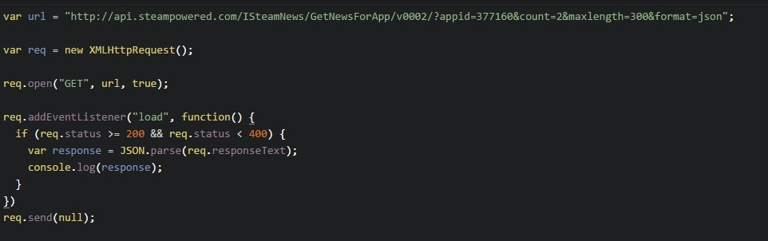

Using Javascript to make HTTP requests
The above code introduces a new concept called AJAX which stands for Asynchronous Javascript And XML. It is basically what we use to communicate with a server. You can read more about AJAX here.
The above code is what you will basically be using everytime you wish to make requests to your API to get data that can then be displayed on a webpage. More on that later. For now, let's focus on what the above code is actually doing.
This line of code simply declares a variable "url" to hold the url of our request.
Here, we are creating an object to help with sending our HTTP request.
Here, the object we created earlier to help with our HTTP request calls its open method which takes 3 arguments: the request type, which in this case is set to GET, the url for our API request, and a boolean value true which is allowing us to make this request asynchronously.

The snippet here, once the page loads, parses the JSON data that we get back as long as the response status is good (between 200 and 400), and logs the data to the console. The req.send(null) just lets it be known that we are not sending any additional data with the request, so we can set this to null for most all GET requests.
The example code above is for an HTTP request that does not require our API key as you probably noticed. For requests we make that do require our key, the structure is the same, we would just need to make sure we send our key along with our request, like so:

Whew!
We've covered alot of important concepts so far. We've learned how to make a simple api request in the browser, and now we've learned the basics of making http requests using our api. But it's not enough to just make requests, we've got to know how to interpret the data that we get back! Let's take a look at the JSON data format next.
Previous Continue